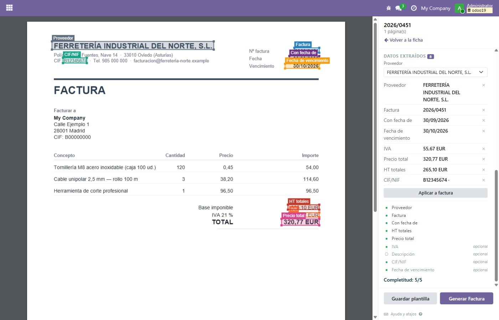
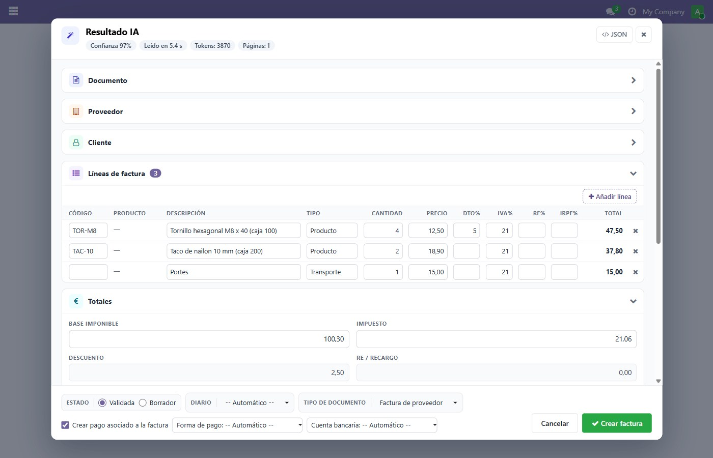
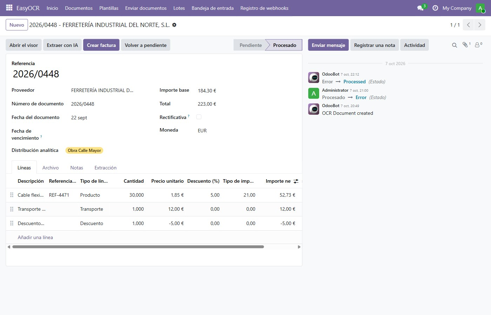
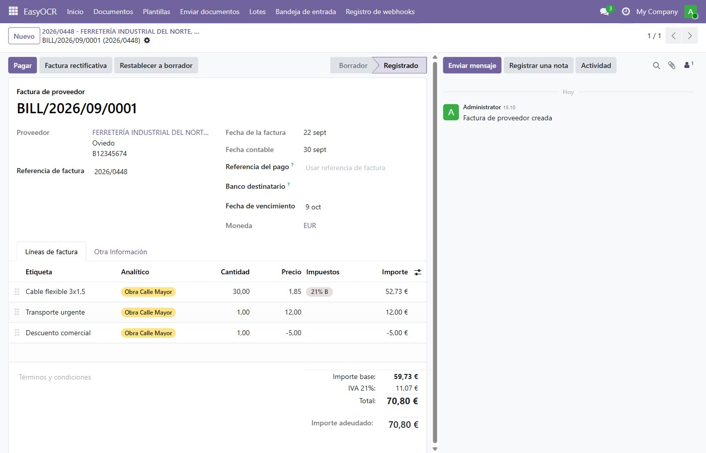
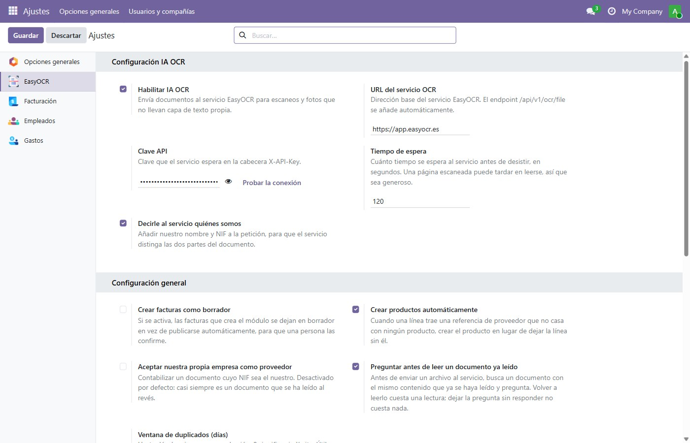

Drop a supplier invoice or an expense receipt and review what was read from it before it becomes an entry. The file stays on the screen the whole time, so a document that was read badly is corrected where it was read, and one that failed is sent again instead of being lost.

The workbench: the document on the left, and on the right everything that can be done to it. Draw a rectangle over each field once and the text under it is read from the file itself, which costs nothing. Save the rectangles under that supplier and their next invoice opens with them already in place.
Supplier, tax number, document number, dates, totals and lines are read from the file, and shown for review and correction before any bill is made.
A supplier that sends the same layout every month only has to be set up once. The same fields are read from it again, so the review gets shorter over time.
One click turns the document into a supplier bill, with its lines and its taxes. The supplier is matched by tax number, or created from what was read. A credit note becomes a vendor credit note instead.

The confidence and what it cost, one card per part of the document, the lines with their VAT, surcharge and withholding ready to correct, a warning when they do not add up, and the choice of draft or validated, journal and payment. From there, one button makes the bill.

The document keeps what was read, next to the fields it came from, so anything wrong is fixed here and not on the bill afterwards.

And the supplier bill, with one line per line read, its products, its discounts and its taxes.
Odoo Community 18.0 or 19.0. Odoo Enterprise is not required, and no other module has to be bought.
A PDF that already carries its text is read inside your browser, with no service and no cost.
Scans and photographs need the EasyOCR extraction service, configured once in the settings with its address and an API key. The extraction is what is paid for, per document; this module is free and stays free.

Sixteen switches over the service, over what a document becomes and over what a webhook may do on its own, and a button that checks your key without spending a reading.
Write to info@easysoft.es. Made by EasySoft Tech S.L.